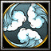

- 主要屬性 靈活
攻擊範圍 128
- 基礎護甲 5
基礎攻速 1.8
- 基礎攻擊 99 - 113
基礎跑速 300
風魔家的首領歷代都稱小太郎，但他們比雜賀、服部都要神秘，沒有留下相關人物姓名，甚至沒有留下統一的相貌描述，一直侍奉北條家。
-

-
D
忍法．迷蹤步
-
100/115/130/145/160
-
16
LV1進入隱形狀態，攻擊或是使用技能即會現身，隱形最多維持20秒。LV2 - LV5進入隱形狀態，提升(5/10/15/20)%的移動速度或是使用技能即會現身，現身的第一擊可以額外造成(90/175/260/345)傷害，隱形最多維持20秒。
天生主動技能，提升「忍法．朧」技能等級可強化此技能
-
-
W
忍法．朧
-
100/130/160/190
-
20/19/18/17
造出指定目標的幻影，幻影可以造成等同本尊80%的傷害，但是會受到350%的傷害，持續(5.0/5.5/6.0/6.5)秒。
冷卻時間隨技能等級提升降低，提升此技能等級可強化「忍法．迷蹤步」
-
-
E
忍法．熾烈之徑
-
80/100/120/140
-
15
施展之後，會在經過的地方產生火焰，碰到火焰的敵人每秒受到(90/120/150/180)的傷害。熾烈之徑持續15秒。
-
-
R
忍法．十八方手裏劍
-
135/135/135/135
-
17
使目標敵軍被陷阱糾纏，使其受困而無法移動(1.0/1.5/2.0/2.5)秒並且在18方位創造出手裏劍進行攻擊，每發手裏劍造成(5/10/15/20)傷害。
無視魔法免疫牽制，但魔法免疫單位不會暈眩。
-
-
T
忍法密傳．四方導雷
-
150/150/150
-
85/80/75
使目標敵軍成為導雷的目標，將會暈眩1秒，並且在接下來每隔1秒便會承受一次四方導雷的攻擊， 造成175真實傷害並且暈眩0.35秒。持續(4/5/6)次。
學習等級為6/12/18，冷卻時間隨技能等級提升降低。
永久性的提升(3/6/9/12)靈活、智慧和力量。